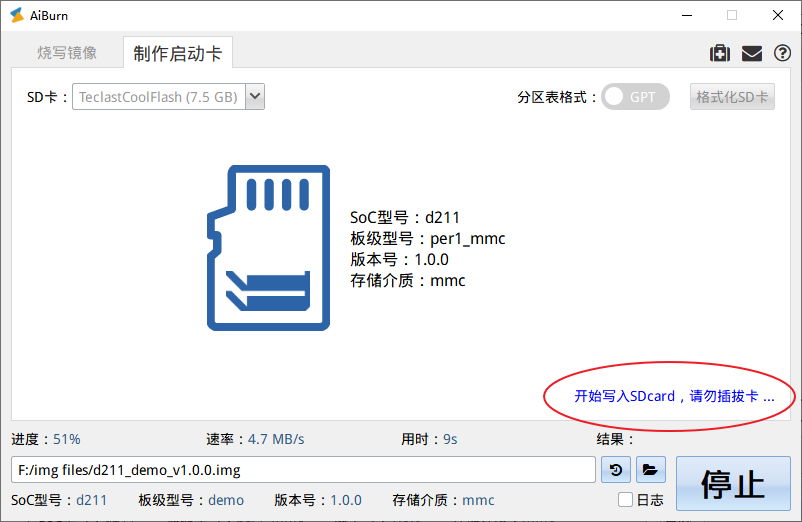

SD 卡
16 May 2025
Read time: 1 minute(s)
作为一种通用存储介质，SD 卡在 Luban-Lite 的刷机系统中有三种工作模式。
制作启动卡
使用 Luban-Lite SDK 时，可以将 SD 卡作为一种通用存储设备，来创建系统分区和存储系统文件。此时，需要通过
AiBurn 制作一张启动卡，并将其插到开发板后上电启动即可。
-
以管理员身份运行 AiBurn 刷机工具。

制作启动卡时必须开启管理员权限。
-
打开制作启动卡标签页。
-
在 SD 卡 的选择框中，选择需要写入的 SD 卡。
必须选择准确的 SD 卡，避免将其它移动存储设备的数据写坏。以选中 TeclastCoolFlash 为例，页面会出现以下警告提示：
如果 SD 卡中有烧写过镜像，根据用户选择的镜像文件和 SD 卡中的镜像文件是否一致，在制作启动卡界面，会显示不同提示信息，示例如下：

-
点击开始，完成写卡操作，将镜像文件写入到用户选中的 SD 卡中。
此时页面会出现如下提示信息：注： -
当制作启动卡完成后，如果 Windows 系统提示是否要将其格式化，选择 取消忽略此消息，否则跳过此步。
启动卡采用的分区格式不是 Windows 系统的常规文件系统，因此会出现此提示信息。
故障：如果系统提示制作启动卡失败，可在格式化 SD 卡后重复制作启动卡的操作。

卡刷机
SD 卡刷机的逻辑检测在 BROM 中进行，需要刷机的 SD 卡必须满足下列要求：
-
将 SD 卡格式化成单分区的 FAT32 文件系统。
-
复制刷机固件到 SD 卡中，如 d211_demo128_nand_v1.0.0.img。
-
复制固件的配置文件 bootcfg.txt 到 SD 卡中。
-
插卡上电启动开发板，自动进行刷机。
-
刷机的时候屏幕上会提示 AiBurn SDCard。
-
刷机成功屏幕上会提示 AiBurn done。
卡升级
卡升级是指将升级固件存储到 SD 卡上后调用 OTA 的接口进行升级。
关于 OTA 卡升级的详细使用，可参考 OTA 方案。